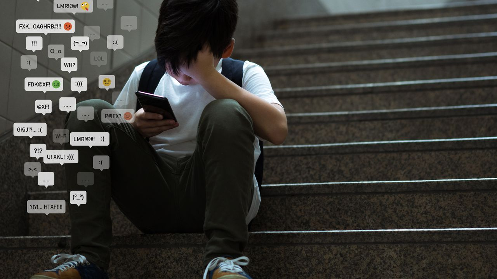

Reconocer si tu hijo está siendo víctima de ciberacoso en la escuela puede ser un desafío, ya que a menudo los niños y adolescentes pueden sentirse avergonzados, asustados o inseguros para hablar al respecto. Sin embargo, aquí hay algunas señales que podrían indicar que tu hijo está experimentando ciberacoso:
Tips para reconocerlos
- Cambios en el comportamiento o el estado de ánimo: Presta atención a cambios notables en el comportamiento o el estado de ánimo de tu hijo. Pueden volverse más retraídos, ansiosos, deprimidos o enojados sin una causa aparente.
- Uso excesivo o evitación de dispositivos electrónicos: Si tu hijo está pasando mucho tiempo en línea o, por el contrario, evita sus dispositivos electrónicos por completo, podría ser una señal de que algo está sucediendo.
- Cambios en el rendimiento escolar: Si notas una disminución repentina en las calificaciones o el rendimiento académico de tu hijo, esto podría ser una indicación de que están siendo afectados por el ciberacoso.
- Aislamiento social: Los niños que son víctimas de ciberacoso pueden retirarse de actividades sociales o perder interés en pasar tiempo con amigos y familiares.
- Cambios en los patrones de sueño o alimentación: El ciberacoso puede causar estrés y ansiedad, lo que a su vez puede afectar los patrones de sueño y alimentación de tu hijo.
- Desaparición o ocultamiento de dispositivos electrónicos: Si tu hijo comienza a esconder o retirar sus dispositivos electrónicos, esto podría ser una señal de que están tratando de evitar el acoso en línea.
- Comentarios o insinuaciones sobre el acoso: Escucha a tu hijo si menciona situaciones incómodas en línea, mensajes amenazantes o comentarios hirientes. Aunque podrían ser vagos al principio, presta atención a cualquier indicio que den.
- Cambios en las relaciones con compañeros: Observa si hay cambios en las relaciones de tu hijo con sus compañeros. Pueden volverse más distantes o tener conflictos con quienes los acosan en línea.
- Revisiones constantes de las redes sociales o cuentas en línea: Si notas que tu hijo está revisando constantemente sus redes sociales o cuentas en línea, podría ser una señal de preocupación por el ciberacoso.
- Desaparición de amigos en línea o contactos: Si tu hijo elimina a amigos en línea o contactos sin explicación, esto podría indicar que está tratando de alejarse de acosadores.
Es importante mantener líneas abiertas de comunicación con tu hijo y fomentar un ambiente en el que se sientan seguros compartiendo sus preocupaciones contigo. Si sospechas que tu hijo está siendo víctima de ciberacoso, habla con ellos de manera comprensiva y busca apoyo de la escuela y otros profesionales si es necesario. El ciberacoso es un problema serio, y es fundamental abordarlo para proteger la salud y el bienestar de tu hijo.